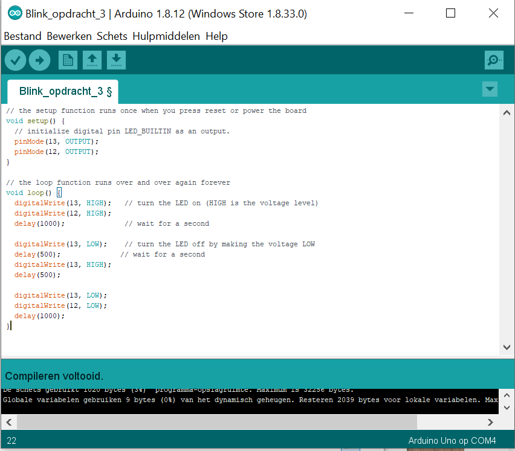
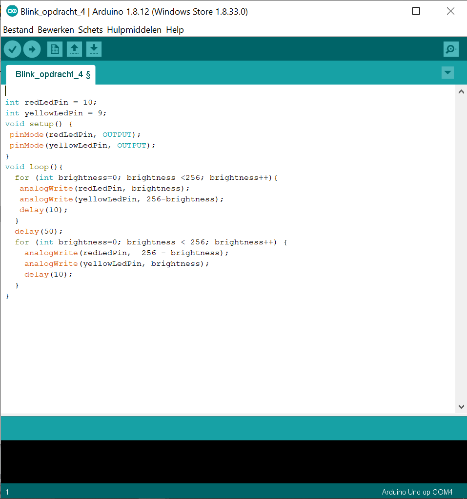
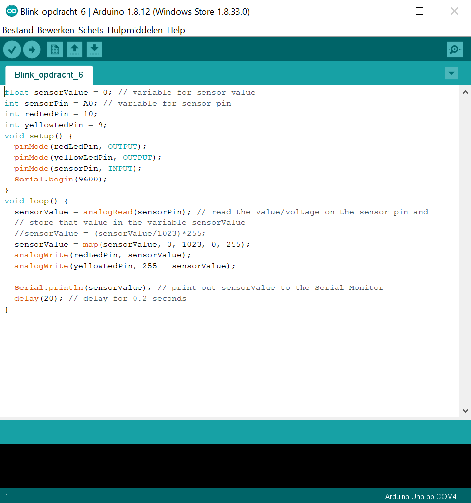
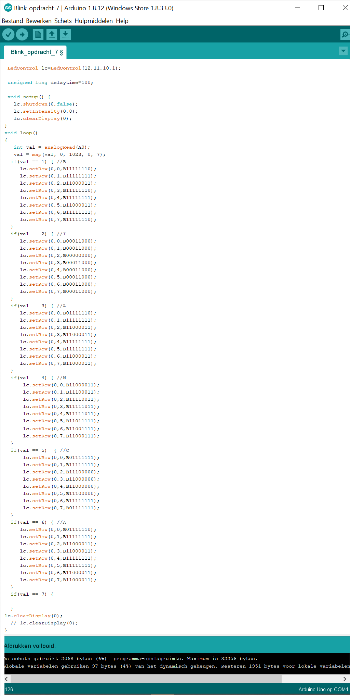
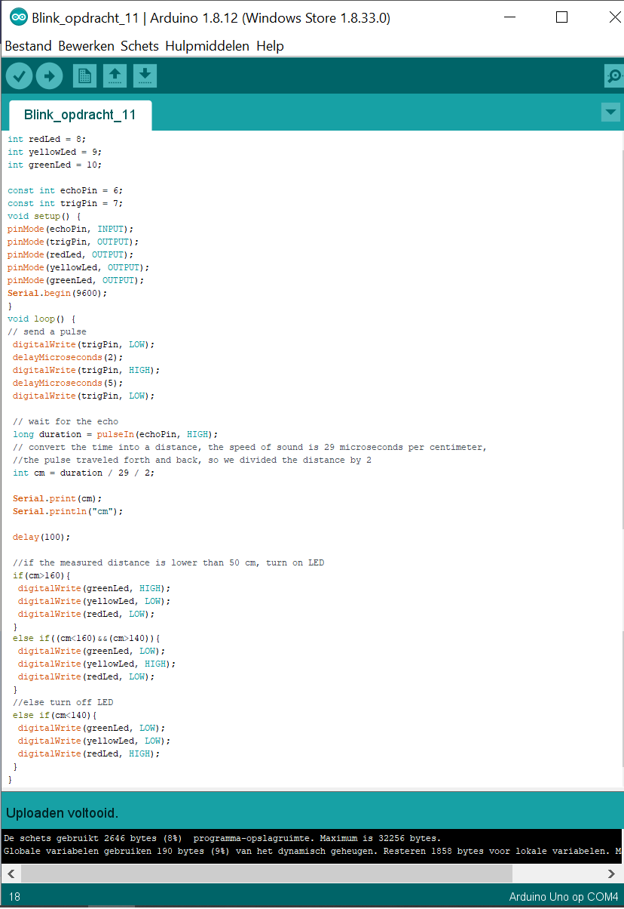
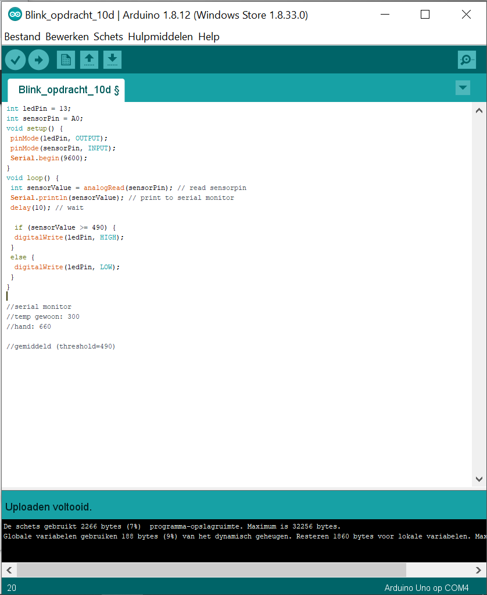
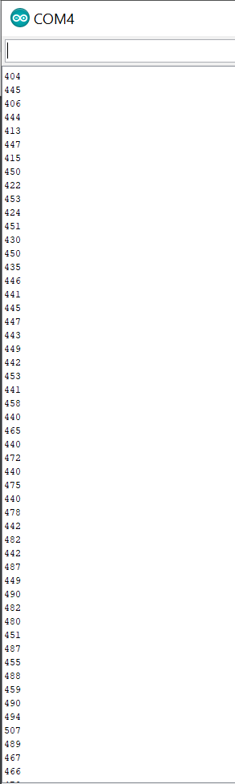
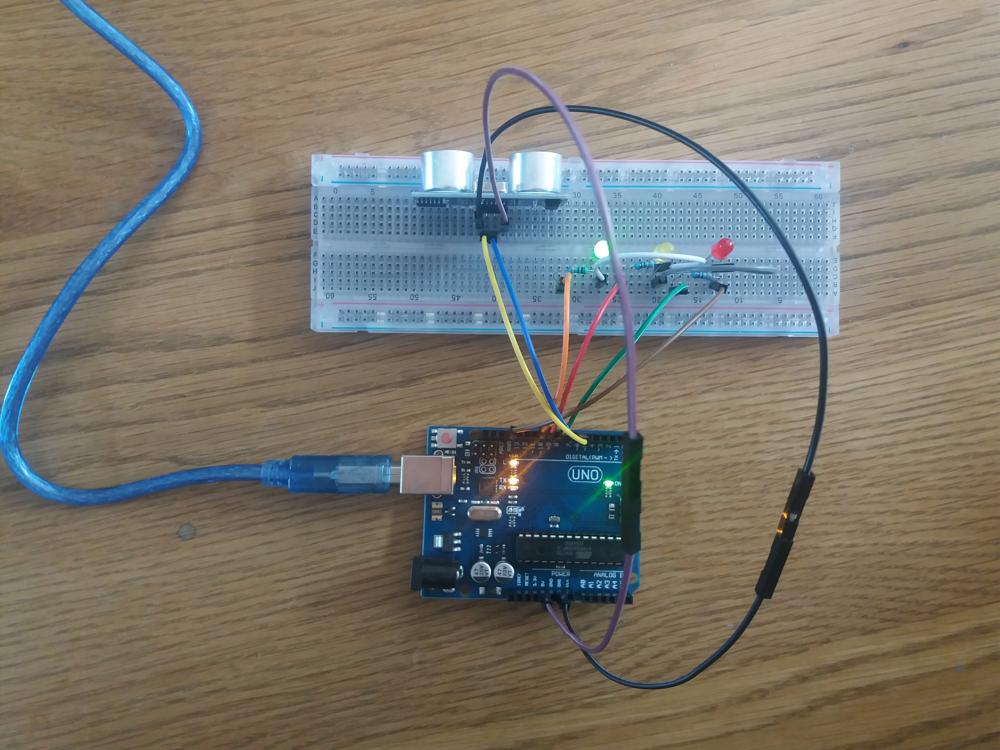
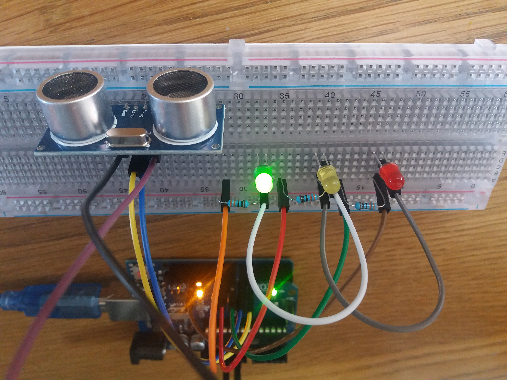

Voor de derde opdracht voor deze workshop moest ik met het Arduino bord twee lampjes aansluiten en laten knipperen in bepaalde volgorden en ritmen. Bij de 'c' van deze opdracht moest ik ervoor zorgen dat het rode lampje 2 keer zo snel knipperde als het gele lampje. Dat was eenvoudig door beide lampjes tegelijk aan te zetten, vervolgens het rode lampje aan en uit laten gaan, en daarna beide lampjes weer uit laten gaan. En omdat het in een loop zit, worden deze stappen herhaald. Hieronder is de code die ik heb gebruikt.
Hieronder is de video om te laten zien hoe het eruitziet. Je kan zien dat het rode lampje 2 keer aan en uitgaat in dezelfde tijd dat het gele lampje 1 keer aan en uitgaat.
Bij de vierde opdracht was het de bedoeling dat ik de 2 lampjes omstebeurt moest laten 'faden'. Dus eerst is het rode lampje aan en vervaagd totdat het uit is tegelijkertijd is het gele lampje uit en vervaagd totdat het aan is. En vervolgens andersom. De code die ik heb gebruikt staat hieronder.
Hieronder is de video om te laten zien hoe het eruitziet.
In deze opdracht moest er net als in opdracht 4c met 2 led lampjes gewerkt worden, waarbij de ene van uit naar aan fade en de ander tegelijkertijd van aan naar uit fade. Alleen moest het bij deze opdracht worden gedaan met behulp van een potmeter, waaraan gedraaid kan worden en daardoor de lampjes aan en uit moeten faden. Hieronder staat eerst de code en daaronder een video met het resultaat.

Hier mocht ik een LED matrix gebruiker om afbeeldingen of letters met de lampjes in de matrix te maken. Er moest aan de potmeter gedraaid worden en daarbij moest het patroon op de matrix veranderd worden. Ik vond het een leuk idee om mijn naam ermee te schrijven en hieronder is het resultaat te zien in code en daarna een video.

Bij deze opdracht mocht ik eindelijk de speaker gebruiken, daar zat ik al op te wachten toen ik de Arduino set bekeek en erachter kwam dat er een speakertje inzat. Toen ik de opdracht maakte wist ik meteen dat ik het bekende introdeuntje van Mario ging maken door de tonen in de speaker. Na wat gepuzzel is hieronder het resultaat.
tekst
Hier is weer een andere input gebruikt om een lampje te laten branden, namelijk temperatuur. Door middel van een soort thermometer wordt bij een bepaalde temperatuur het lampje aangezet en zodra de temperatuur weer onder de bepaalde waarde is, gaat het lampje weer uit. De waarde van temperatuur werd bepaald door het gemiddelde te nemen van de temperatuur in de kamer en de temperatuur zodra iemand zijn/vinger ertegen aan houdt. Hieronder is de code te zien, de temperatuurwaarden tijdens de video in de Serial Monitor (te zien is dat de waarde omhoog gaat omdat er lichaamstemperatuur tegen de thermometer aangaat en naar beneden) en de video met resultaat.
 Een social distance indicator, zo wordt deze opstelling genoemd. Zodra een persoon of object verder dan 160cm van de meter vandaan is, is het veilig en brandt het groene lampje. Zodra een persoon of object tussen de 160cm en 140cm van de meter afzit is het minder veilig en gaat het gele lampje branden. En als een persoon of object minder dan 140cm van de meter afzit dan is het gevaarlijk en gaat het rode lampje branden. Hier is de code en opstelling voor deze opdracht. Voor de video heb ik de afstanden kleiner gemaakt, zodat de gehele opstelling klein kon blijven.
 